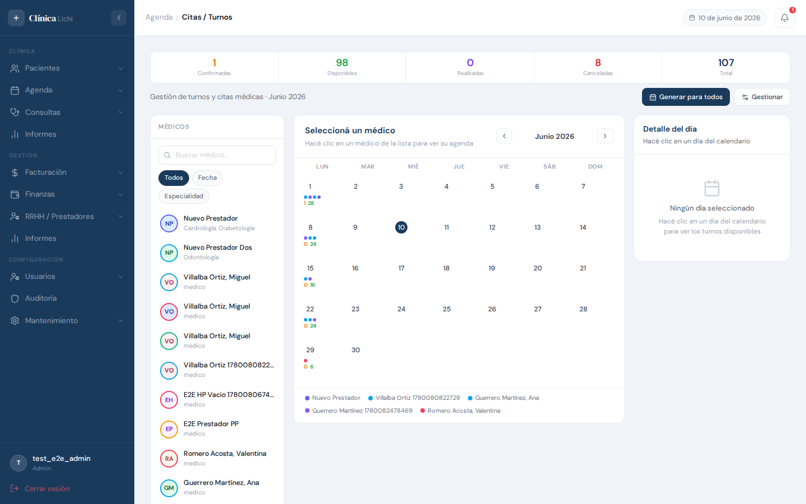
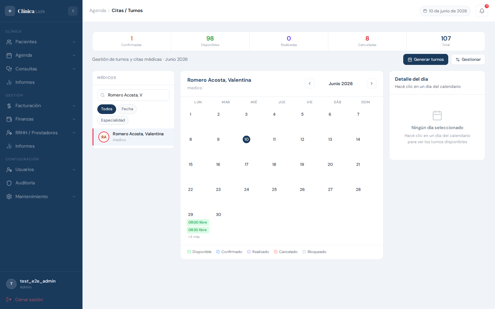
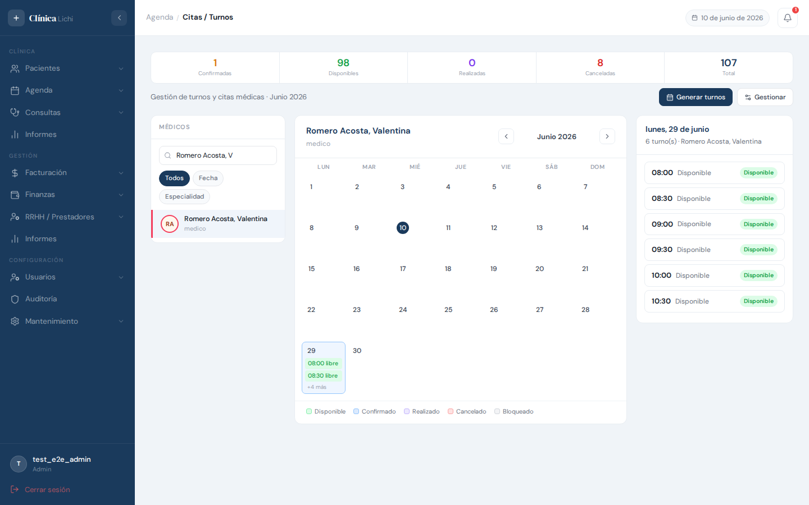
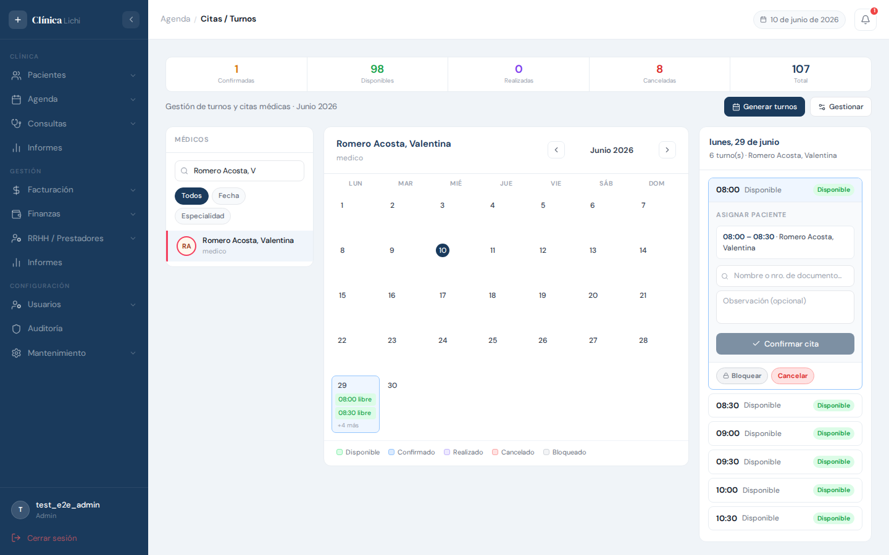
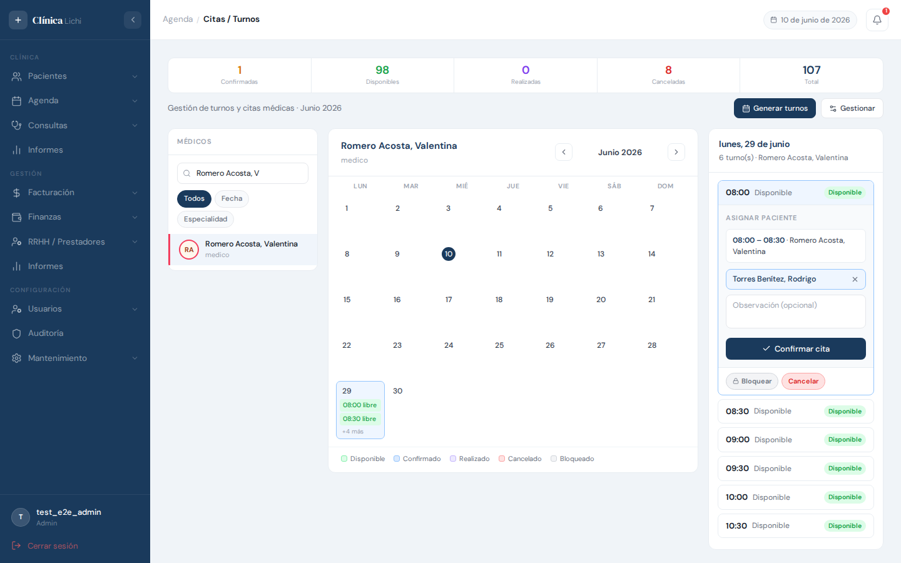
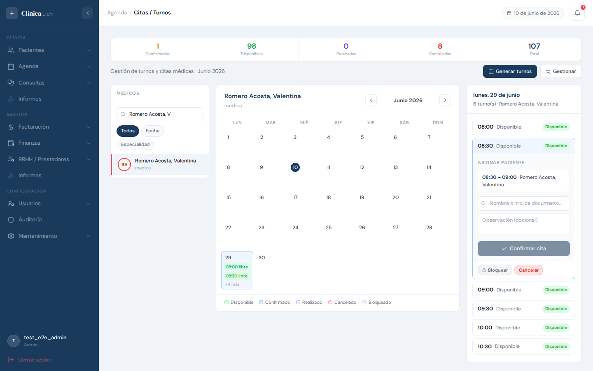
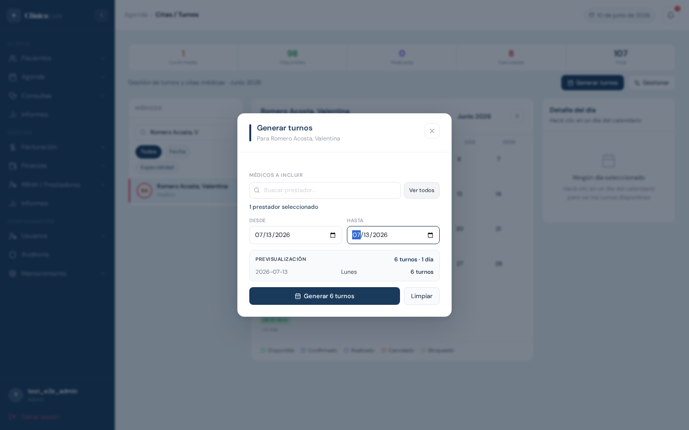
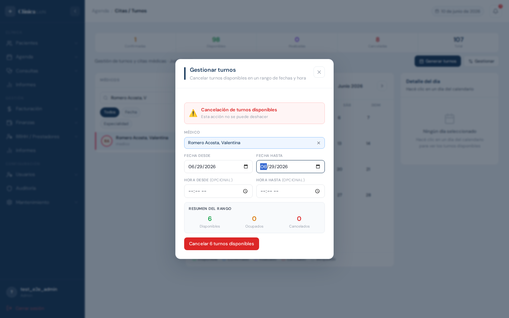

Descripción del módulo
El módulo Agenda / Citas y Turnos es el centro operativo de la clínica: muestra en un calendario mensual todos los turnos generados para cada prestador, permite asignar pacientes a turnos disponibles, controlar el estado de cada turno a lo largo del día y gestionar cancelaciones masivas en un rango de fechas.
Cada celda del calendario refleja el estado real de la agenda en tiempo real. La vista puede mostrarse de forma global (todos los prestadores) o filtrada por médico para ver únicamente sus turnos. Al hacer clic en un día se despliega el panel de turnos de ese día a la derecha, donde se realizan todas las acciones sobre los turnos individuales.
| Acción | Admin | Recepcionista | Médico | Secretaria |
|---|---|---|---|---|
| Ver agenda | ✅ (todos) | ✅ (todos) | ✅ (solo suyo) | ✅ (médico asignado) |
| Asignar paciente a turno | ✅ | ✅ | ✅ | ✅ |
| Cambiar estado de turno | ✅ | ✅ | ✅ | ✅ |
| Reagendar turno | ✅ | ✅ | ✅ | ✅ |
| Crear / editar turno manualmente | ✅ | ✅ | 🚫 | ✅ |
| Generar turnos desde horario | ✅ | ✅ | 🚫 | ✅ |
| Cancelar rango de turnos | ✅ | ✅ | 🚫 | ✅ |
| Eliminar turno (borrado lógico) | ✅ | 🚫 | 🚫 | 🚫 |
| Ver turnos eliminados | ✅ | 🚫 | 🚫 | 🚫 |
Estados de un turno
| Estado | Color en UI | Significado |
|---|---|---|
| disponible | Verde | El turno está libre y puede asignarse a un paciente. |
| ocupado | Azul | El turno tiene un paciente asignado y está confirmado. |
| realizado | Violeta | El paciente se atendió. El turno fue marcado como completado. |
| cancelado | Rojo | El turno fue cancelado. Libera al paciente asignado si lo tenía. |
| inactivo | Gris | El turno está bloqueado. No puede asignarse ni cancelarse directamente. |
Acceder al módulo
En el menú lateral izquierdo, dentro del grupo Agenda, hacé clic en Citas / Turnos. Esta opción es visible para todos los roles. Médicos y secretarias ven directamente la agenda de su prestador asignado; administradores y recepcionistas ven la agenda global con la lista completa de médicos.
Pantalla principal — calendario
La pantalla se divide en tres columnas:
- Columna izquierda — Lista de médicos (admin/recep) o perfil del médico (médico/secretaria)
- Columna central — Calendario mensual
- Columna derecha — Panel de turnos del día seleccionado

Barra de estadísticas
En la parte superior se muestra un resumen del mes en curso con cinco contadores: Confirmadas (ocupadas), Disponibles, Realizadas, Cancelados y Total. Los valores se actualizan en tiempo real al realizar cambios en los turnos.
Calendario mensual
El calendario muestra el mes en curso. Para cada día con turnos aparece información dependiendo de si hay o no un médico seleccionado:
| Sin médico seleccionado | Con médico seleccionado |
|---|---|
|
Puntos de color — uno por cada médico con turnos ese día (hasta 5, luego "+N más"). Conteo naranja/verde — turnos ocupados / turnos disponibles del día. |
Pills con etiqueta — muestran el paciente asignado o el estado del turno (disponible, cancelado, inactivo). Se muestran hasta 2 pills; si hay más, aparece "+N más". |
Navegación de meses
Usá los botones ‹ y › en la cabecera del calendario para ir al mes anterior o siguiente. El mes y año actual se muestran centrados entre los botones.
Botones de acción
| Botón | Descripción | Roles |
|---|---|---|
| Generar para todos / Generar turnos | Abre el modal para generar turnos en un rango de fechas. El texto cambia según si hay un médico seleccionado. | Admin, Recepcionista, Secretaria |
| Gestionar | Abre el modal para cancelar turnos disponibles en un rango de fechas y hora. | Admin, Recepcionista, Secretaria |
Seleccionar médico y filtrar la vista
La columna izquierda muestra la lista de todos los médicos activos (para admin y recepcionista). Hacé clic en un médico para filtrar el calendario y ver únicamente sus turnos. El médico seleccionado queda resaltado con borde izquierdo coloreado.

Búsqueda de médico
Usá el campo de búsqueda en la parte superior de la lista para filtrar médicos por nombre. La lista se actualiza mientras escribís (debounce 300 ms).
Filtros de vista
Debajo del buscador hay tres chips de filtro:
| Chip | Descripción |
|---|---|
| Todos | Muestra todos los médicos sin filtro adicional. |
| Fecha | Permite ingresar una fecha; el calendario navega automáticamente a ese mes y selecciona ese día. |
| Especialidad | Despliega un buscador de especialidades; filtra la lista para mostrar solo los médicos con esa especialidad y auto-selecciona el primero. |
Deseleccionar médico
Hacé clic nuevamente sobre el médico seleccionado para deseleccionarlo y volver a la vista global del calendario.
Ver turnos del día
Hacé clic en cualquier celda del calendario para seleccionar ese día. El panel derecho se actualiza con los turnos de esa fecha.

Encabezado del panel
Muestra el día de la semana y la fecha del día seleccionado, y un subtítulo con la cantidad de turnos. Si hay un médico seleccionado, también aparece su nombre.
Turnos en el panel
Cada turno aparece como una card con:
- Hora de inicio — a la izquierda, en negrita
- Nombre del paciente (si está asignado) o el estado del turno si está libre
- Badge de estado — coloreado según el estado del turno
Vista sin médico seleccionado
Cuando no hay médico seleccionado, el panel muestra todos los turnos del día de todos los prestadores, con una barra lateral de color por médico, la hora de inicio, el nombre del paciente o estado, el nombre del médico y el badge de estado.
Sin turnos en el día
Si el día no tiene turnos, el panel muestra el mensaje "Sin turnos para este día". Esto es normal cuando no se han generado turnos para esa fecha o el horario del prestador no incluye ese día de la semana.
Estado vacío inicial
Antes de hacer clic en un día, el panel muestra un ícono de calendario con el texto "Ningún día seleccionado".
Asignar paciente a un turno
Para asignar un paciente a un turno disponible, hacé clic sobre ese turno en el panel lateral para expandirlo. Aparecerá la sección Asignar paciente.

-
Expandir el turno — hacé clic en la cabecera del turno disponible en el panel. El turno se resalta con borde azul.
-
Buscar el paciente — escribí al menos 3 caracteres del nombre o número de documento del paciente en el campo de búsqueda. Los resultados aparecen en un dropdown.
-
Seleccionar el paciente — hacé clic en el nombre del paciente en el dropdown (o usá las flechas ↑/↓ y Enter para navegar con teclado). El nombre seleccionado queda resaltado en azul.
-
Agregar observación (opcional) — escribí una observación o motivo de consulta en el campo de texto.
-
Confirmar cita — hacé clic en el botón Confirmar cita. El turno cambia a estado ocupado y aparece un mensaje de confirmación.

Deseleccionar paciente
Si seleccionaste un paciente por error, hacé clic en la × de la card azul con el nombre del paciente para volver al buscador.
Notificación por correo
Si el paciente tiene correo electrónico registrado, el sistema envía automáticamente una notificación de confirmación de reserva al momento de asignar el turno. Esta acción es transparente para el usuario.
Cambiar el estado de un turno
Al expandir un turno en el panel, debajo de la información del paciente (si aplica), aparecen los chips de transición de estado. Cada chip representa una acción posible según el estado actual del turno.

Transiciones disponibles por estado
| Estado actual | Acciones disponibles | Confirmación requerida |
|---|---|---|
| disponible | Bloquear (→ inactivo) · Cancelar (→ cancelado) | Sí, en ambas |
| ocupado | Realizado (→ realizado) · Cancelar y liberar (→ cancelado, quita paciente) | Solo en "Cancelar y liberar" |
| inactivo | Activar (→ disponible) · Cancelar (→ cancelado) | Solo en "Cancelar" |
| cancelado | Reactivar (→ disponible) | No |
| realizado | Revertir a ocupado (→ ocupado) | Sí |
Turnos con consulta asociada
Si el turno tiene una consulta médica registrada, los chips de estado no aparecen. En su lugar se muestra un mensaje explicando la situación según el estado de la consulta:
- Consulta en curso — "Finalizá o anulá la consulta desde el módulo de consultas antes de modificar el turno."
- Consulta finalizada — "El turno ya fue completado. No se puede modificar desde la agenda."
- Consulta anulada — "El turno tiene una consulta anulada y no se puede modificar desde la agenda."
Confirmación de cambio
Las acciones que requieren confirmación (marcadas en la tabla) abren un diálogo de confirmación. Hacé clic en el botón de confirmación para aplicar el cambio, o en Cancelar para no modificar nada. Cuando la acción afecta a un paciente asignado, el diálogo lo advierte explícitamente.
Reagendar un turno
Reagendar traslada al paciente de un turno ocupado a otro turno disponible del mismo prestador. El turno original queda en estado cancelado.
-
Expandí el turno ocupado que querés reagendar.
-
Hacé clic en el chip Reagendar que aparece en la sección de acciones del turno.
-
Se abre la sección de reagendado. Seleccioná una nueva fecha usando el selector de fecha.
-
Los turnos disponibles del prestador para esa fecha aparecen como chips de horario. Hacé clic en el turno al que querés mover al paciente.
-
Hacé clic en Confirmar reagendado. La operación es atómica: el turno original se cancela y el nuevo queda ocupado con el mismo paciente.
Generar turnos y gestionar rangos
Generar turnos desde horario
El botón Generar turnos (o Generar para todos cuando no hay médico seleccionado) abre un modal para crear en la base de datos los turnos correspondientes a los horarios activos configurados para cada prestador.

-
Hacé clic en Generar turnos (o presioná F2). Se abre el modal.
-
Seleccioná los prestadores a incluir. Por defecto todos los que tienen horarios activos están marcados. Podés usar Seleccionar todos o marcar/desmarcar individualmente. El campo de búsqueda filtra la lista.
-
Ingresá el rango de fechas: fecha desde y hasta. La generación respeta el día de la semana de cada horario (o la fecha exacta de las excepciones), por lo que no se crean turnos en días que no corresponden.
-
La sección de Previsualización muestra cuántos turnos se crearían por fecha antes de confirmar.
-
Hacé clic en Generar. El resultado indica cuántos turnos se crearon y cuántos se omitieron (ya existían).
Gestionar turnos — cancelación masiva
El botón Gestionar permite cancelar en bloque todos los turnos disponibles de un prestador en un rango de fechas y hora opcional.

-
Hacé clic en Gestionar. Aparece el modal con una advertencia de que la acción no se puede deshacer.
-
Seleccioná el médico escribiendo en el campo de búsqueda y haciendo clic en el resultado. Si ya había un médico seleccionado en el calendario, aparece precargado.
-
Ingresá el rango de fechas (obligatorio). Opcionalmente podés ingresar hora desde y hora hasta para cancelar solo los turnos dentro de esa franja horaria.
-
El panel de Resumen del rango muestra cuántos turnos disponibles, ocupados y cancelados hay en el rango indicado (solo los disponibles se cancelarán).
-
Hacé clic en Cancelar N turnos disponibles. Aparece un diálogo de confirmación adicional. Confirmá para ejecutar la acción.
NavigationGuard en los modales
Si intentás cerrar el modal de Generar después de haber ingresado una fecha hasta, o el modal de Gestionar después de haber ingresado cualquier dato, aparecerá un diálogo de confirmación preguntando si querés descartar los datos ingresados. Si el modal está en blanco, se cierra directamente sin advertencia.
Mensajes de error frecuentes y comportamientos esperados
Errores al asignar paciente
| Mensaje | Causa y solución |
|---|---|
| "Solo se puede asignar un turno disponible. Estado actual: X." | Se intentó asignar a un turno que ya no está disponible (alguien más lo tomó antes). Actualizá la página y buscá otro turno libre. |
| "Paciente no encontrado." | El paciente ingresado no existe o fue dado de baja. Verificá los datos en el módulo de Pacientes. |
| El dropdown de pacientes no muestra resultados | Normal cuando el texto es menor a 3 caracteres. Ingresá al menos 3 caracteres del nombre o documento. |
Errores al cambiar estado
| Mensaje | Causa y solución |
|---|---|
| "Solo se puede marcar como realizado un turno con paciente asignado (ocupado)." | No se puede marcar como realizado un turno que no está ocupado. Asigná primero un paciente. |
| "No se puede inactivar un turno ocupado o realizado." | Para bloquear un turno ocupado, primero cancelá y liberá al paciente. |
| "Consulta en curso / finalizada / anulada…" | El turno tiene una consulta médica asociada. Los cambios de estado se bloquean desde la agenda; gestionarlos desde el módulo de Consultas. |
Errores al reagendar
| Mensaje | Causa y solución |
|---|---|
| "Solo se puede reagendar un turno ocupado." | El turno ya no está ocupado. Actualizá la vista. |
| "El nuevo turno debe estar disponible." | El turno destino fue tomado entre que lo seleccionaste y confirmaste. Elegí otro. |
| "El nuevo turno debe pertenecer al mismo prestador." | Solo se puede reagendar dentro de los turnos del mismo médico. Para cambiar de médico, cancelá y asigná manualmente en el nuevo turno. |
| "Sin turnos disponibles para esa fecha" | No hay turnos libres del prestador en la fecha elegida. Probá con otra fecha o generá nuevos turnos primero. |
Errores al generar turnos
| Mensaje / Comportamiento | Causa y solución |
|---|---|
| El botón Generar está deshabilitado | Falta completar la fecha desde, la fecha hasta, o no hay ningún prestador seleccionado. |
| Resultado "0 creados, N omitidos" | Los turnos ya existían (generación idempotente). No es un error: el sistema no duplica turnos. |
| "Ningún horario activo coincide con los días del rango seleccionado." | El horario del prestador es para, por ejemplo, los Lunes, pero el rango ingresado solo cubre días distintos al Lunes. Ampliá el rango de fechas. |
Comportamientos esperados que no son errores
| Comportamiento | Explicación |
|---|---|
| El calendario no muestra turnos en ninguna celda | Ocurre cuando el médico seleccionado no tiene turnos generados para ese mes. Es necesario usar el modal Generar turnos primero. |
| La generación de turnos deja fuera fechas del rango | El horario del prestador solo aplica a días específicos de la semana. Los días sin horario se omiten automáticamente. |
| El panel de turnos muestra vacío tras seleccionar un día | Ese día no tiene turnos generados para el médico seleccionado. Generá turnos para ese rango o verificá que el horario cubre ese día de la semana. |
| Los chips de cambio de estado no aparecen en el turno expandido | El turno tiene una consulta médica asociada (en curso, finalizada o anulada). El bloqueo es intencional para mantener la integridad clínica. El mensaje indica qué hacer. |
| La barra de estadísticas muestra cero en todos los contadores | Aún no hay turnos generados para el mes en curso. Las estadísticas son globales (no dependen del médico seleccionado). |
| Al cancelar un turno ocupado, el paciente desaparece del turno | Es el comportamiento correcto: la acción "Cancelar y liberar" quita la asignación del paciente además de cancelar el turno, para que ese paciente pueda ser asignado a otro turno libremente. |